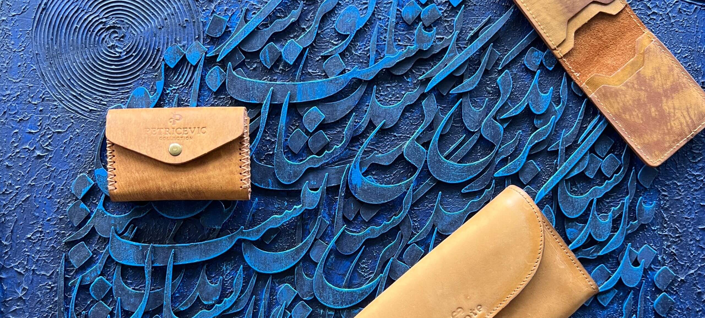

O nama
Nafisi Leather je dio grupacije tvrtke360 consult & trading d.o.o.
Zadovoljstvo nam je već dugi niz godina zastupati preko 20 Hrvatskih tvrtki za azijsko tržište.
Selekcija, dizajn, personalizacija te predstavljanje najkvalitetnijih proizvoda od devine kože za poslovni ETUI u Europi nam je bila jedna od najvećih želja.
Život čine sitni detalji
Prilikom Vašeg sudjelovanja na poslovnim sastancima, klijenti, partneri, djelatnici i kolege Vas primjećuju po detaljima koje ste izabrali da Vas prate u svim Vašim poslovnim potezima, strategijama i odlukama.
Danas imamo izuzetno kvalitetan asortiman za poslovnih ETUI od egzotične devine kože u ponudi koje su personalizirano dizajnirani za Vas, s Vašim logom i potpisom, imajući u obzir čime se bavite i kakav styling Vi i Vaši partneri imate.
Kako bi najbolje odabrali kolekciju koja Vama i Vašim klijentima odgovara, preporučujemo da pogledate galeriju fotografija naših proizvoda te modele koje smo personalizirano dizajnirali za naše drage klijente, kako bi Vaš odabir na najbolji mogući način predstavio Vas osobno. U našem showroom-u imate mogućnost doživjeti kvalitetu proizvoda u raznim modelima i bojama.
Sa zadovoljstvom Vas očekujemo !